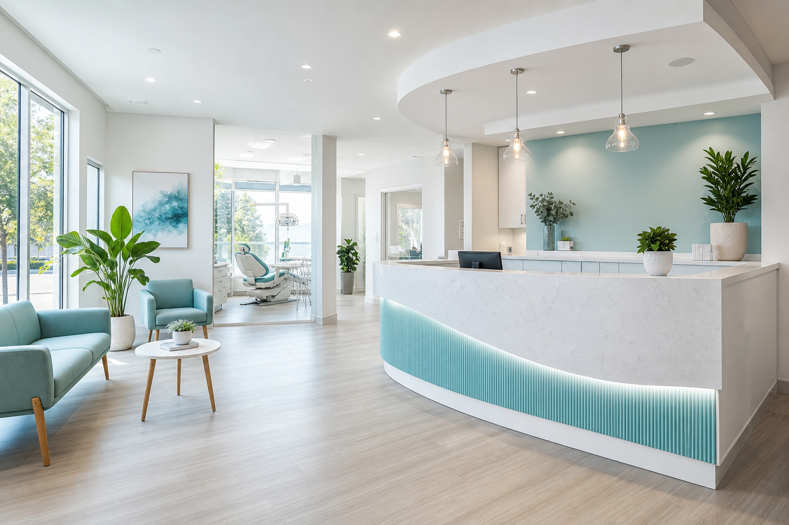
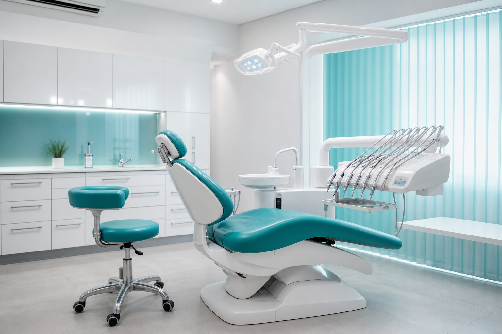

Parodontologie
Surfaçage radiculaire secteur — 85 € / secteur (exemple).
Soins conservateurs, esthétique et urgences — grille tarifaire et praticiens entièrement fictifs.
Prendre rendez-vous
Montants TTC inventés, non contractuels. Aucune prise en charge réelle.
| Acte | Description | À partir de |
|---|---|---|
| Bilan bucco-dentaire | Examen clinique + petites radios si besoin (fictif) | 45 € |
| Détartrage complet | 2 arcades, brossage démo | 68 € |
| Facette céramique | Par dent, simulation numérique incluse | 520 € |
| Blanchiment ambulatoire | 2 séances, gouttières perso « démo » | 390 € |
| Couronne zircone | Pilier standard, délai 10 jours ouvrés fictif | 780 € |
Surfaçage radiculaire secteur — 85 € / secteur (exemple).
Scellement sillons 6 ans — 28 € / dent (fictif).
Consultation douleur week-end — 55 € (démo).
Dr Inès Morlot (chirurgien-dentiste), Dr Hélène Varga (orthodontie démo), 3 assistantes stérilisation — diplômes et RPPS inventés.
« Détartrage sans douleur, explications claires sur le brossage interdentaire. Accueil top. »
« Facettes très naturelles. Seul bémol : délai de 3 semaines pour la couleur finale — ok pour la maquette. »
« Urgence un dimanche : rappel sous 20 min, rendez-vous le lundi matin. Rassurant. »
03 00 00 00 00 · contact@sourire-lorraine-demo.local · Parking gratuit (fictif)
Sur desktop, ce bloc teste la lecture longue, les listes et une image panoramique sous légende. Aucun acte médical réel n’est proposé.

Nous décrivons un parcours patient imaginaire : questionnaire médical numérisé, prise de tension au bras droit, discussion sur les habitudes de brossage, radiographie bitewing si « zone d’ombre » détectée, proposition de plan de traitement en trois volets, devis séparé pour chaque phase, signature électronique fictive sur tablette, rappel SMS J-1, stationnement P2 avec ticket validé à l’accueil, magazine de salle d’attente daté de février 2026, fontaine à eau avec gobelets compostables, musique d’ambiance piano, lumière indirecte 3000 K, chaise ergonomique taupe, instruments emballés stérile visible en vitrine pédagogique.
Nous ajoutons des paragraphes pour la volumétrie : la prévention reste le pilier de la politique santé bucco-dentaire démo ; les détartrages réguliers limitent l’inflammation gingivale ; les brossettes interdentaires sont montrées sur modèle en résine ; le fil dentaire est décrit comme un allié des espaces étroits ; le bain de bouche est présenté sans marque ; la brosse à dents électrique est évoquée comme option sans recommandation commerciale réelle.